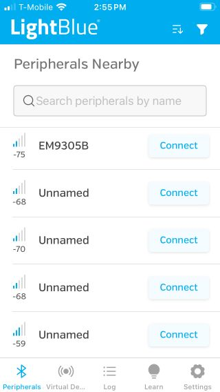
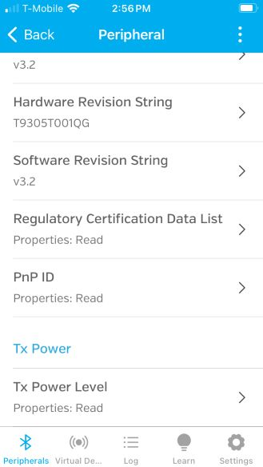
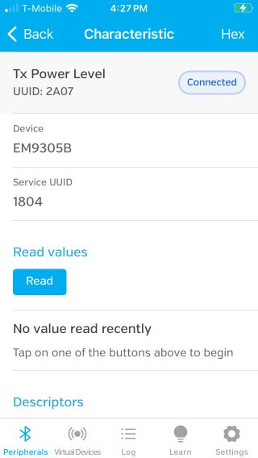

Tx Power Control Example
Overview
This sample application demonstrates how to manually control the transmit power for both the advertising and connected states. The application sets the tx output power to +6 dbm for the advertising state and -3 dbm for the connected state.
To change the advertising tx power while advertising you must first stop advertising and then resume again after calling EMB_DmLEPCSetTxPower.
NOTE: For dynamic Tx power control the Enhanced Power Control setting should be FLASE.
The following services are exposed:
Tx Power
Device Information
Build
The build target of controlling the transmit output power dynamically is: nvm_emb_power_control
cd <sdk>\build
cmake --build . --target nvm_emb_power_control
Program
To program and run the dynamic control of Tx output power example is:
cd <sdk>\tools\blengine
python blengine_cli.py --port COMYY run emsystem_prog ..\..\build\projects\nvm_emb_power_control\nvm_emb_power_control.ihex --progress
With YY = the COM port number of your DVK (optional if you set it in the file <sdk>\tools\blengine\config.cfg)
Test (Dynamic Tx Power Control example)
To connect to the device, use a mobile device with a BLE app installed such as LightBlue.
When installed, open the application and start a BLE scan. Find your device which will be named ‘EM9305B’.
Click on Connect to connect to the device.
|  |
{kind=link}
Once connected, scroll down to the TX Power service and tap on Tx Power Level characteristic.
|  |
{kind=link}
Read the tx power characteristic.
|  |
{kind=link}